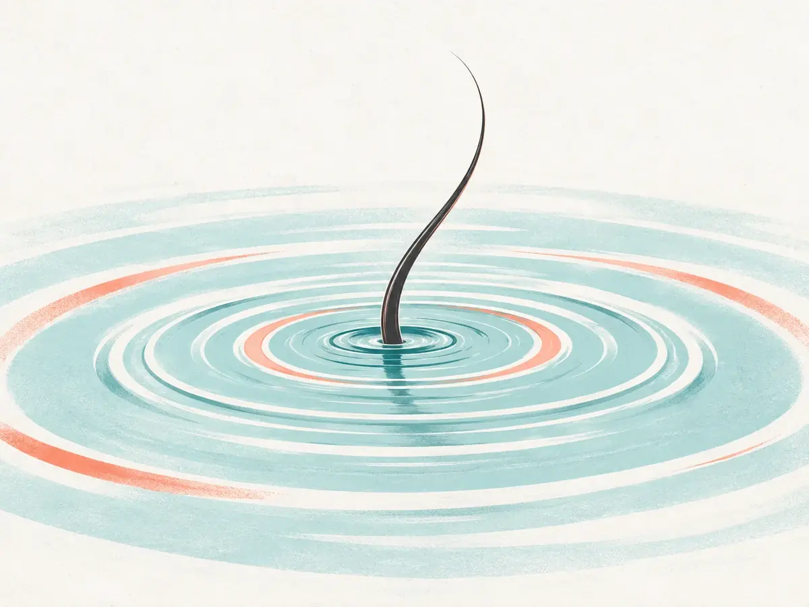

No.17風見坂駅 南口から徒歩4分
写真・イラストはAI生成のイメージです
得意なことを、
3つに絞っています。
小さな店なので、できることを先にお伝えします。合わないと感じたら、遠慮なくほかのお店とも比べてください。



しないこと
- 予約で決めていないメニューを、当日におすすめすること
- 店販品の購入をおすすめすること（質問には答えます）
- パーマ・縮毛矯正（ほかのお店をご案内します）
曲がるのは、
赤いポストの角だけ。
目印は、桜並木・赤いポスト・水色の扉の3つです。
No.210分 風見坂駅の南口を出ます。
No.220〜3分 桜並木の通りを、まっすぐ南へ。
No.233分 赤いポストのある角を右へ。
No.244分 2軒目、水色の扉がミナモです。
- 住所
- 架空県風見坂 1-4-7
- 営業時間
- 10:00 – 19:00（最終受付 17:30）
- 定休日
- 火曜・第3水曜
- 駐車場
- なし（近くのコインパーキングをご利用ください）
- お支払い
- 現金・クレジットカード
予約の前に、
よく聞かれること。
どんな髪型にしたいか、決まっていなくても大丈夫ですか？
大丈夫です。はじめての方は15分のカウンセリング（無料）で、普段の乾かし方や朝の時間をうかがってから、形をご提案します。
終わる時間を先に知りたいです。
予約のときにメニューを選ぶと、終わりの時間まで表示されます。当日もカウンセリングの最後に、もう一度お伝えします。
子どもを連れて行ってもいいですか？
ベビーカーのまま入れます。ほかのお客さまと時間が重ならないよう、予約のときにお知らせください。
キャンセルの連絡はどうすればいいですか？
前日の19時までにお電話ください。料金はかかりません。当日の変更も、分かった時点でご連絡いただければ、空いている時間をご案内します。
料金に税は含まれていますか？
はい。表示している料金はすべて税込です。髪の長さによる追加料金もありません。
はじめての日も、
終わりの時間は先に。
所要時間と料金は、メニューのページで同じ行に並べています。
お電話でも受け付けます TEL 【要確認：電話番号】（営業時間内）